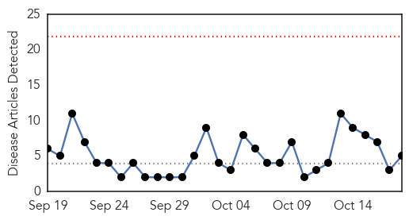
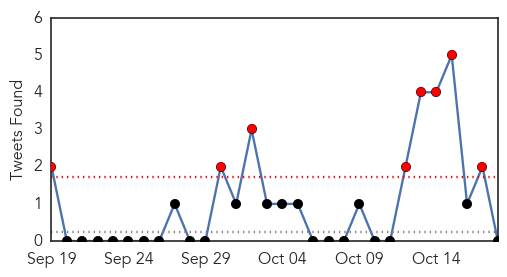
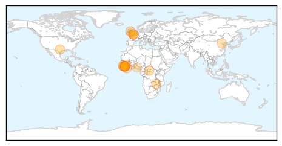

Cholera
30-Day Web Trend
0 alerts, 0 warnings

30-Day Twitter Trend
7 alerts, 1 warnings

Article Locations

Article Confidences

Top Articles:
- 0.994
- Haiti's Earthquake Was Devastating, but the Cholera Epidemic Was Worse
- 0.988
- Justice For Haiti Cholera Victims, Activists Demand UN
- 0.906
- More Than 800 000 Children Mark World Hand Washing Day in Juba > Gurtong Trust > Editorial
- 0.863
- Pope’s Visit: Kagina Demands Speed on Namugongo Road Works
- 0.863
- Kemigisa Fights Gender-based Violence in Tooro
Top Tweets:
-
No tweets found for Oct 18, 2015
Ebola
30-Day Web Trend
3 alerts, 0 warnings

30-Day Twitter Trend
6 alerts, 0 warnings

Article Locations
Article Confidences

Top Articles:
- 1.000
- UK Ebola Nurse 'Critically Ill' as Her Condition Worsens, Says London Hospital
- 0.999
- Ebola outbreak may enter third year after new cases discovered in Guinea
- 0.999
- UK Ebola Nurse ‘Critically Ill’ as Her Condition Worsens, Says London Hospital
- 0.999
- Ebola survivors can harbour virus in semen for at least 9 months
- 0.999
- So It Turns Out There's A Lot We Don't Know About Ebola
- 0.998
- Ebola lingers in men
- 0.998
- UK Ebola Nurse 'Critically Ill' as Her Condition Worsens, Says London Hospital
- 0.997
- Condition of hospitalized Ebola nurse in United Kingdom worsens
- 0.997
- Schools Turn Away Students from West...
- 0.996
- UK nurse with 're-activated Ebola' critically ill
- 0.995
- Condition of put in the hospital Ebola nurse in Uk gets worse
- 0.993
- 'Ebola nurse' Pauline Cafferkey critically ill
- 0.934
- Sexual transmission of Ebola virus in Liberia confirmed using genomic analysis
- 0.933
- China to mass produce Ebola vaccine
- 0.928
- Zambia National Broadcasting Corporation
- 0.827
- Ebola: Laboratory test of suspected patient proves negative, says FG
- 0.525
- BRAC’s intervention in the Ebola fight is lauded
Top Tweets:
- 0.999
- reactivated Ebola because the virus - http://t.co/1e5ZNupFRo ebola
- 0.995
- Ebola virus persists after symptoms - http://t.co/8v4cS4BOVM ebola
- 0.992
- EBOLA PRANK CALL - Thinks he has got Ebola! - https://t.co/WvO6DG1rZ1 ebola
- 0.982
- Confirmed: Deadly Ebola Virus Can Be Sexually Transmitted - http://t.co/PrSaYP7dVQ ebola
- 0.980
- Sierra Leone claims 21 days Ebola free - http://t.co/uFvBBWQGGE ebola
- 0.980
- Semen samples can test positive for Ebola virus - http://t.co/AimdXmboPU ebola
- 0.975
- Hype Ebola screening-Kasonde - http://t.co/rpEjm75rtd ebola
- 0.973
- Ebola outbreak might enter third year after new cases in Guinea - http://t.co/Hvmufzuxi3 ebola
- 0.970
- Ebola virus can live up to nine months in semen: CDC - http://t.co/qkir9fhPJw ebola
- 0.970
- Ebola virus can live up to nine months in semen: CDC - http://t.co/ecmGMgbEDo ebola
- 0.970
- Ebola Zombies Sub English FullMovie - https://t.co/ZT4pUvU9ll ebola
- 0.969
- Ebola: Laboratory test of suspected patient proves negative, says FG - http://t.co/SvfQQXH9Hh ebola
- 0.965
- Ebola vaccine 'safe and responsive' so far in Sierra Leone trials - http://t.co/vw33YmFaKh ebola
- 0.964
- Ebola symptom - http://t.co/PwmyHyp0J9 ebola
- 0.962
- Ebola workers 'always at risk' - http://t.co/YpqLpCbBkr ebola
- 0.962
- Ebola is now an STD - http://t.co/5A4OhDAtmM ebola
- 0.962
- Ebola Is Now An STD - http://t.co/CN6XvVdjWp ebola
- 0.956
- Ebola survivors can harbour virus in semen for at least 9 months - http://t.co/CDNFKheC4v ebola
- 0.956
- Ebola survivors can harbour virus in semen for at least 9 months - http://t.co/58xqZM864V ebola
- 0.951
- Ebola nurse in United Kingdom may be rare case of relapse - http://t.co/AI1Jddf7WH ebola
- 0.945
- BRAC's intervention in the Ebola fight is lauded - http://t.co/XnJo0oq4ji ebola
- 0.941
- Medal for Tiverton man who spent six weeks in Sierra Leone managing set-up of Ebola treatment ... - http://t.co/tpAsUkKfS9 ebola
- 0.940
- Ebola outbreak may enter third year after new cases in Guinea - Citizen TV (press release) http://t.co/cLqLRHC2lL ebola EVD
- 0.939
- Two New Ebola Cases in Guinea, WHO Says - http://t.co/jLgu1PDqTc ebola
- 0.924
- Ebola now classified as sexually transmitted disease - http://t.co/gMBx1njPRV ebola
- 0.922
- Isolation surge capacity for Ebola patient management - http://t.co/4b6cmYls4x ebola
- 0.920
- Condition of Scottish Nurse Suffering From Ebola Relapse Deteriorates - http://t.co/z7KJtwsaTz ebola
- 0.919
- UCTH lauds FG intervention over Ebola scare - http://t.co/ugLc38J3rQ ebola
- 0.906
- Scottish Nurse With Ebola Complications Is 'Critically Ill' - http://t.co/wZUxAasneU ebola
- 0.906
- Scottish Nurse With Ebola Complications Is 'Critically Ill' - http://t.co/dIr1BNI9ge ebola
- 0.906
- Scottish Nurse With Ebola Complications Is 'Critically Ill' - http://t.co/AWAnMILrCk ebola
- 0.903
- New Ebola Cases in Guinea Are the First in Weeks - http://t.co/oSRrW3TcLl ebola
- 0.897
- Ebola-hit nurse 'critically ill' in London hospital - http://t.co/i00uylszie ebola
- 0.890
- First Case of Ebola Transmission By Sexual Contact - http://t.co/l9rTzcgLOR ebola
- 0.885
- Ebola: FG says deceased student free from pathogenic viruses - Naija247news http://t.co/qLf0MdqXFM ebola EVD
- 0.882
- Ebola has almost gone, but life is still desperate in Sierra Leone - http://t.co/0gYH4hy1W1 ebola
- 0.881
- Scientists Now Reporting “Post-Ebola Syndrome” - legal Insurrection (blog) http://t.co/dE675bj2Fv ebola EVD
- 0.880
- UK nurse with 're-activated Ebola' critically ill - http://t.co/7Ir4FAtNgt ebola
- 0.874
- Nurse Who Had Ebola Re-hospitalized and Now Critically Ill - http://t.co/hgmO23In2I ebola
- 0.861
- United Kingdom nurse critically ill after Ebola infection returns - http://t.co/ZqMngxbCfm ebola
- 0.852
- Ebola may persist in semen for nine months, study shows - http://t.co/VAFASkAkWq ebola
- 0.850
- Condition of hospitalized Ebola nurse in United Kingdom worsens - http://t.co/GjBxf9UZRc ebola
- 0.834
- Pauline Cafferkey -- Ebola or Assassination Attempt? - http://t.co/bAgUZpumZ7 ebola
- 0.832
- INTERNATIONAL: Study finds Ebola in male survivors can survive up to 9 months - http://t.co/4jf8DTjvdQ ebola
- 0.828
- How a Woman's Ebola Relapse Tears up Everything Doctors Thought They Knew - http://t.co/xwteZruZyf ebola
- 0.809
- 'Ebola nurse' Pauline Cafferkey critically ill - http://t.co/XNmHNM3us0 ebola
- 0.806
- Condition of hospitalized Ebola nurse in UK worsens - http://t.co/Uov7IxiEHN ebola
- 0.800
- Ebola nurse Pauline Cafferkey 'critically ill' in hospital - http://t.co/UikLEws0xP ebola
- 0.793
- UK Ebola Nurse 'Critically Ill' as Her Condition Worsens, Says London Hospital - http://t.co/WqBxpBXVoS ebola
- 0.787
- Schools Scheduled to Reopen in March - Ebola Crisis - http://t.co/gknl1enxYH ebola
Showing top 50 tweets...